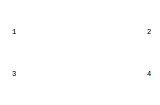
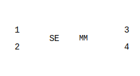
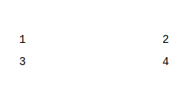
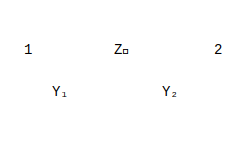
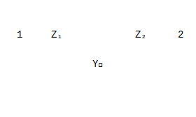
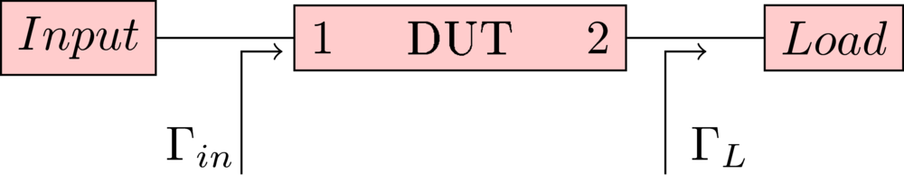

MWTOOLBOX Reference
Table of Contents
- INTRODUCTION
- USING THE LIBRARY
- TECHNICAL NOTES
- Operations With Network Parameters
- S-Parameter Definitions
- Multiport S-Parameter Renormalization
- Transmit Matrix
- Matrix Conversions
- Gain Definitions
- Input Impedance/Admittance
- Stability Factors
- Simultaneous Conjugate Matching
- Extract Load Reflection Coefficient
- Matrix Definition Of Typical Networks
- Frequency-Dependent Special Elements
- Connecting Nodes
- Connecting S-Parameter Blocks Together
- Connecting Two Ports of a Network
- Extracting multiport S-Parameters of chip
- Passivity
- Transmission Lines
- De-Embedding, Calibration And Characterization
- Operations With Network Parameters
- REFERENCES
INTRODUCTION
Purpose
MWTOOLBOX is a library for processing RF/Microwave networks.
Document structure
This document is meant to be both a user manual and a technical book. At first part, there is a tutorial of the library and at the rest of the document, there is technical reference for the functions used in the library.
USING THE LIBRARY
Installation
The library is stored in Electrical. It can be installed by running the following command in Anaconda command prompt:
pip install --upgrade \\RBGSDV511.eu.infineon.com\AIT_Simulation\Electrical\Users\Tuncay\Libraries\Python\microwave_toolbox
Short Tutorial
Getting Started
The main module used for processing RF network data is rfnetwork. First step is importing the library by:
from mwtoolbox import rfnetwork
SPFILE is the main class in rfnetwork module that is used to define and process multiport RF network data. Its main target is to enable calculations on RF network data in a python script and therefore enable automation of these kind of tasks.
The most usual way to create an RF network object is reading an s-parameter file.
snet = rfnetwork.spfile("amplifier.s2p")
Some parameters of the network can be accessed in following ways:
snet.freqs # frequency points of the network in Hz snet.S(i,j) # S(i,j) snet.Y(i,j) # Y(i,j) snet.Z(i,j) # Z(i,j) snet.T(i,j) # T(i,j) snet.ABCD(i,j) # ABCD(i,j)
All these functions return a numpy array and take two optional parameters, data_format and freqs.
snet.S(i,j,data_format="complex",freqs=None)
data_format is the format of the returned data. By default, complex data is returned. Other supported formats are (case insensitive):
K: Stability factor of 2-portMU1: Input stability factor of 2-portMU2: Output stability factor of 2-portVSWR: VSWR at port iMAG: MagnitudeDB: Magnitude in dB (20log)REAL: Real partIMAG: Imaginary partPHASE: Phase of in degrees between 0-360UPHASE: Unwrapped phase in degreesGDELAY: Group delay in seconds
freqs is the frequency points of the returned data. By default, it is the current frequency points of the network.
Changing Frequency Points
Frequency points of the network can be changed by interpolation using the command:
snet.set_frequency_points(newfreqs)
where newfreqs is the new frequency points as a list or numpy array.
Or frequencies from the beginning or end of the frequency list can be cropped with:
snet.crop_with_frequency(fstart=fs1, fstop=fs2)
fstart is optional. If given, frequencies below fs1 are cropped out. fstop is also optional and if given, frequencies above fs2 are cropped out.
S-parameter Renormalization
S-parameter renormalization with different reference impedance can be done with the following command:
snet.change_ref_impedance(impedances)
If impedances parameter is a
- number, it will be the new reference impedance for all ports and frequencies.
- list or numpy array, its size should be equal to number of ports and each element is assumed to be reference impedance for each port. If this reference impedance is a:
- number, it is used for all frequencies and reference impedance is frequency independent.
- list or numpy array, its size should be the same as the number of frequency points. Each element of the list is used for corresponding frequency.
For complex reference impedances, different S-Parameter definitions are possible. Three of them are supported in the library (S-Parameter Definitions). By default, power-waves are used.
Reconfiguration of Ports
Reconfiguration of ports can be done through snp2smp method. With this method, ports can be swapped or some ports can be removed from the network.
snet.snp2smp(newports)
where newports is the new ports list. This means port j of new network is newports[j] port of the original network. Unused ports of the original network are terminated with current reference impedances of those ports.
Cascading and De-embedding of Two-port Networks
Two-port SPFILE network objects can be cascaded simply using "+" operator. At the following example, port-1 of snet2 is connected to port-1 of snet1 and snet becomes the new two-port network between port-1 of snet1 and port-2 of snet2. snet1 and snet2 are not modified.
snet = snet1+snet2
Similarly, de-embedding of two-port SPFILE network objects can be done using "-" operator. Following the previous example, we can obtain snet1 again by de-embedding snet2 from snet, or obtain snet2 again by de-embedding snet1 from snet.
snet1 = snet-snet2
snet2 = -snet1+snet
Inplace Modification
All functions which modify the SPFILE object, returns the modified object and takes inplace parameter as the last argument. If this parameter is;
- 0, the object which calls this method is NOT modified but the modified object is returned from the method.
- -1 (default value), the
inplaceattribute of the calling object is used. Default value for new objects is 1. - any other value, the object calling this method is modified.
snet_new = snet.snp2smp([2,1], inplace=0) # snet is not modified. snet_new is the new object with new port configuration. snet.snp2smp([2,1], inplace=1) # snet is modified and returned.
Initialization of network objects
Every network is associated to and represented by an SPFILE object. SPFILE objects can be created in a number of ways:
An
SPFILEobject can created by reading a Touchstone file. Extra parameters that does not exist in file (port_namesetc.) can be defined later by methods of the class.twoport = spfile("measurement.s2p")
An empty
SPFILEobject can be created to be populated later.twoport = spfile(n_ports = 2)Special
SPFILEobjects can be created using factory methods.twoport = spfile.stripline(length, w, eps_r, h1, h2, t)
Parameters
In this section all parameters of SPFILE class is given. These parameters are not meant to be used by user directly. This information is merely intended to give an idea about what information a SPFILE object includes and to be used by people who want to extend the functionality of the class.
frequency_pointsorfreqs: This is the list of frequencies at which network data is definedsdata: S-Parameter data of the network defined for every frequency point in FrequencyPoints.ydata: Admittance Matrix data of the network. Calculated only when needed from S-Parameters.zdata: Impedance Matrix data of the network. Calculated only when needed from S-Parameters.abcddata: ABCD Matrix between 2 of the ports of the network. Other ports are terminated.formulation: 3 different types of S-Parameter definitions are supported in library. This variable shows the definition currently used.filename: Ifsdatais read from a Touchstone file, this variable holds the name of the file.refimpedance: A list of reference impedances of all the ports of the network in order. For each port, impedance can be either of these: a. A complex number which is valid for all frequencies b. A list of complex numbers including the reference impedance values for each frequency. The length of this list should be the same a the number of frequencies c. A function which takes only the frequency as argument and outputs a complex number d. AnSPFILEobject. \(S_{11}\) of this object is used.sym_matrix: S-Parameter can be defined using symbolic expressions instead of numeric value. This variable holds the symbolic S-Parameter expression. Numeric values of S-Parameters are calculated using this matrix and numeric values of parameters used in the matrix. It is set to None if not used.sparam_gen_func: S-Parameters can be created using a function which takes only a frequency as argument and outputs a complex. This variable holds this function. It is set toNoneif not used.sym_parameters: A dictionary holding the numeric values of parameters (except frequency) used in symbolic S-Parametersym_matrix.port_names: A list holding the names of the ports in order. Names can be set explicitly or read from Touchstone files exported from HFSS.inplace: Almost all functions of the library returns the object it operates on. But it can be set whether a function modify the object itself and return it, or does not modify the object but returns a new object. This behaviour can be set for every function used by passing an argument. In case of no argument passed to the function, the default behaviour is set by this variable. If this is 1, object itself is modified and returned. If it is 0, object is not modified and a new object is returned by function.comments: This variable holds the comments read from the Touchstone file.
TECHNICAL NOTES
Operations With Network Parameters
S-Parameter Definitions
In literature there are different types of definitions for \(a\) and \(b\) signals of S-Parameter definition. In this library 3-types are supported; Power Waves, Pseudo-Waves and HFSS Pseudo-Waves. Power Waves is the default definition used. The definition used is set by formulation parameter:
S-Parameter Formulations:
- Power-Waves
- Pseudo-Waves
- HFSS Pseudo-Waves
- Power-Waves
Power-Waves used for Power S-Parameter Calculation
\begin{align} a = \frac{V + {IZ}_r}{2 \sqrt{{Re} \{ Z_r \}}} \qquad b = \frac{V - {IZ}_r^{\ast}}{2 \sqrt{{Re} \{ Z_r \}}} \\ V = \frac{{aZ}_r^{\ast} + {bZ}_r}{\sqrt{{Re} \{ Z_r \}}}, \qquad I = \frac{a - b}{\sqrt{{Re} \{ Z_r \}}} \end{align} - Pseudo-Waves
There are different definitions for Pseduo-Waves in the literature. Pseudo-Waves definition from (Edwards and Steer 2016)
\begin{align} a = \frac{(V + {IZ}_r) \sqrt{{Re} \{ Z_r \}}}{2 | Z_r |}, \qquad b = \frac{(V - {IZ}_r) \sqrt{{Re} \{ Z_r \}}}{2 | Z_r |} \\ V = (a + b) \frac{| Z_r |}{\sqrt{{Re} \{ Z_r \}}}, \qquad I = \frac{(a - b) | Z_r |}{Z_r \sqrt{{Re} \{ Z_r \}}} \end{align} - HFSS Pseudo-Waves
HFSS Pseudo-Waves used for Generalized S-Parameter Calculation
\begin{align} a &= \frac{V + {IZ}_r}{2 \sqrt{Z_r}} \\ b &= \frac{V - {IZ}_r}{2 \sqrt{Z_r}} \\ V &= (a + b) \sqrt{Z_r} \\ I &= \frac{a - b}{\sqrt{Z_r}} \end{align}HFSS defines Generalized S-Parameters as the S-Parameters related to HFSS pseudo-waves. But generally in the literature, regardless of the wave definition, generalized S-Parameters are defined as S-Parameters with different reference impedance at each port.
Multiport S-Parameter Renormalization
The following equations are used to renormalize S-Parameters to a different set of reference impedances (Reveyrand 2018) .
Let:
\begin{align} a &= F (V + Z_r I) \label{eqab} \\ b &= F (V - Z_r^{ \ast} I) \label{eqab1} \end{align} \begin{equation} Z_r = {diag} \{ Z_1, \ldots . \} \end{equation}where
- \(Z_1\), \(Z_2\) are the reference impedances for each port.
- \(diag{}\) a matrix of which only diagonal elements are non-zero and given by the list in brackets.
- \(F\) depends on the S-Parameter formulation used and given as in the related section.
- \(A^{*}\) The complex conjugate of matrix A.
Then the renormalization formulae are;
\begin{align} \Gamma &= {diag} \left\{ \frac{Z_1^{{new}} - Z_1}{Z_1^{{new}} + Z_1^{\ast}}, \ldots \right\} \\ A &= (F^{{new}})^{-1}.F.(I - \Gamma^{\ast})^{-1} \\ S^{{new}} &= A^{- 1} \left( {S - \Gamma^{\ast}}^{} \right) (I - \Gamma S)^{- 1} A^{^{\ast}} \end{align}Transmit Matrix
T-Matrix definition used in the library is:
\begin{equation} \left[\begin{array}{c} b_1\\ a_1 \end{array}\right] = \left[\begin{array}{cc} T_{11} & T_{12}\\ T_{21} & T_{22} \end{array}\right] \left[\begin{array}{c} a_2\\ b_2 \end{array}\right] \end{equation} \begin{equation} \left[\begin{array}{c} b_2\\ a_2 \end{array}\right] = \frac{1}{T_{22} T_{11} - T_{12} T_{21}} \left[\begin{array}{cc} T_{11} & - T_{21}\\ - T_{12} & T_{22} \end{array}\right] \left[\begin{array}{c} a_1\\ b_1 \end{array}\right] \end{equation}For a reciprocal network;
\begin{equation} T_{11} T_{22} - T_{12} T_{21} = 1 \end{equation}Matrix Conversions
- S - Z Conversion
Using the notation from Multiport S-Parameter Renormalization (equation \ref{eqab}), conversions between S and Z matrices are done as;
\begin{align} Z &= F^{- 1} (I - S)^{- 1} ({SZ}_r + Z_r^{\ast}) F \\ S &= F (Z - Z^{\ast}_r) (Z + Z_r)^{- 1} F^{- 1} \end{align} - S - Y Conversion
\begin{align} Y &= F^{- 1} (Z_r^* + S Z_r)^{- 1} (I_0 - S) F \\ S &= F (I_0-Z_r^*Y) (Z_rY+I_0)^{- 1} F^{- 1} \end{align} - S - T Conversion
This method can also be used for any even number of port numbers. \(S_{x x}\) can be assumed to be submatrix of complete S-Matrix.
\(T\) calculation from \(S\):
\begin{equation} \left[\begin{array}{c} b_1\\ b_2 \end{array}\right] = \left[\begin{array}{cc} S_{11} & S_{12}\\ S_{21} & S_{22} \end{array}\right] \left[\begin{array}{c} a_1\\ a_2 \end{array}\right] \end{equation} \begin{equation} \left[\begin{array}{c} b_1\\ a_1 \end{array}\right] = \left[\begin{array}{cc} S_{12} - S_{11} S_{21}^{- 1} S_{22} & S_{11} S_{21}^{- 1}\\ - S_{21}^{- 1} S_{22} & S_{21}^{- 1} \end{array}\right] \left[\begin{array}{c} a_2\\ b_2 \end{array}\right] \end{equation}Calculation of \(S\) from \(T\):
\begin{equation} \left[\begin{array}{c} b_1\\ a_1 \end{array}\right] = \left[\begin{array}{cc} T_{11} & T_{12}\\ T_{21} & T_{22} \end{array}\right] \left[\begin{array}{c} a_2\\ b_2 \end{array}\right] \end{equation} \begin{equation} \left[\begin{array}{c} b_1\\ b_2 \end{array}\right] = \left[\begin{array}{cc} T_{12} T_{22}^{- 1} & T_{11} - T_{12} T_{22}^{- 1} T_{21}\\ T_{22}^{- 1} & - T_{22}^{- 1} T_{21} \end{array}\right] \left[\begin{array}{c} a_1\\ a_2 \end{array}\right] \end{equation}Multiport Conversion (different T definition than mycode)(Reveyrand 2018):
\begin{align} S = \left[ \begin{array}{cc} S_{{ee}} & S_{{ei}}\\ S_{{ie}} & S_{{ii}} \end{array} \right] \end{align} \begin{align} T \Rightarrow \left[ \begin{array}{c} a_e\\ b_e \end{array} \right] = \left[ \begin{array}{cc} T_{{ee}} & T_{{ei}}\\ T_{{ie}} & T_{{ii}} \end{array} \right] \left[ \begin{array}{c} b_i\\ a_i \end{array} \right] \text{} \end{align} \begin{align} [T] = \left[ \begin{array}{cc} {}[S_{{ie}}]^{- 1} & - [S_{{ie}}]^{- 1} [S_{{ii}}]\\ {}[S_{{ee}}] [S_{{ie}}]^{- 1} & [S_{{ei}}] - [S_{{ee}}] [S_{{ie}}]^{- 1} [S_{{ii}}] \end{array} \right] \end{align} \begin{align} [S] = \left[ \begin{array}{cc} {}[T_{{ie}}] [T_{{ee}}]^{- 1} & [T_{{ii}}] - [T_{{ie}}] [T_{{ee}}]^{- 1} [T_{{ei}}]\\ {}[T_{{ee}}]^{- 1} & - [T_{{ee}}]^{- 1} [T_{{ei}}] \end{array} \right] \end{align}
Gain Definitions
Different definitions of gain for a 2-Port network (Pozar 2005).
Transducer gain;
\begin{align} G_T &= \frac{\text{Power transferred to load}}{\text{Power available from source}} = \frac{P_L}{P_{avs}}\\ G_T &= \frac{1 - | \Gamma_G |^2}{| 1 - S_{11} \Gamma_G |^2} | S_{21} |^2 \frac{1 - | \Gamma_L |^2}{| 1 - \Gamma_{out} \Gamma_L |^2}\\ G_T &= \frac{1 - | \Gamma_G |^2}{| 1 - \Gamma_{in} \Gamma_G |^2} | S_{21} |^2 \frac{1 - | \Gamma_L |^2}{| 1 - S_{22} \Gamma_L |^2}\\ G_T &= \frac{(1 - | \Gamma_G |^2) | S_{21} |^2 (1 - | \Gamma_L |^2)}{| (1 - S_{11} \Gamma_G) (1 - S_{22} \Gamma_L) - S_{12} S_{21} \Gamma_G \Gamma_L |^2} \end{align}Available power gain;
\begin{align} G_a &= \frac{\text{Power available to load}}{\text{Power available from source}} = \frac{P_{avl}}{P_{avs}}\\ G_a &= \frac{1 - | \Gamma_G |^2}{| 1 - S_{11} \Gamma_G |^2} | S_{21} |^2 \frac{1}{1 - | \Gamma_{out} |^2} \end{align}Operating Power gain;
\begin{align} G_p &= \frac{\text{Power transferred to load}}{\text{Power into the network}} = \frac{P_L}{P_{in}}\\ G_p &= \frac{1}{1 - | \Gamma_{{in}} |^2} | S_{21} |^2 \frac{1 - | \Gamma_L |^2}{| 1 - S_{22} \Gamma_L |^2} \end{align}Maximum available gain;
\begin{align} G_{\max} &= \frac{| S_{21} |}{| S_{12} |} \left( K - \sqrt{K^2 - 1} \right)\\ \text{where} \quad K &= \frac{1 - | S_{11} |^2 - | S_{22} |^2 + | \Delta |^2}{2 | S_{12} S_{21} |} \text{ and } \Delta = S_{11} S_{22} - S_{12} S_{21} \end{align}Input Impedance/Admittance
Stability Factors
For stability, K>1 and \(| \Delta | < 1\) where (Orfanidis 2016);
\begin{equation} K = \frac{1 - | S_{11} |^2 - | S_{22} |^2 + | \Delta |^2}{2 | S_{12} S_{21} |} \text{ and } \Delta = S_{11} S_{22} - S_{12} S_{21} \end{equation}\(\mu\) parameters (Edwards-Sinsky stability parameter) enable to identify the source of instability as source or load. For unconditional stability, \(\mu_1 > 1\) and \(\mu_2 > 1\).
\begin{align} \mu_1 &= \frac{1 - | S_{11} |^2}{| S_{22} - \Delta S^{\ast}_{11} | + | S_{12} S_{21} |}\\ \mu_2 &= \frac{1 - | S_{22} |^2}{| S_{11} - \Delta S^{\ast}_{22} | + | S_{12} S_{21} |} \end{align}Simultaneous Conjugate Matching
For simultaneous conjugate match at both ports of a 2-port network, source and load reflection coefficients can be calculated as (Orfanidis 2016):
\begin{align} \Delta &= S_{11} S_{22} - S_{12} S_{21}\\ C_1 &= S_{11} - \Delta S_{22}^{\ast}\\ C_2 &= S_{22} - \Delta S_{11}^{\ast}\\ B_1 &= 1 + | S_{11} |^2 - | S_{22} |^2 - | \Delta |^2\\ B_2 &= 1 + | S_{22} |^2 - | S_{11} |^2 - | \Delta |^2\\ \Gamma_S &= \frac{B_1 \mp \sqrt{B_1^2 - 4 | C_1^2 |}}{2 C_1}, \\ \Gamma_L &= \frac{B_2 \mp \sqrt{B_2^2 - 4 | C_2^2 |}}{2 C_2} \end{align}where (-) should be used when \(B_1 > 0\) or \(B_2 > 0\), (+) otherwise.
Extract Load Reflection Coefficient
Extracting \(\Gamma_L\) at port 2, if \(\Gamma_{{in}}\) of the circuit at port 1 is given.
\begin{equation} \Gamma_L = \frac{\Gamma_{{in}} - S_{11}}{S_{12} S_{21} + (\Gamma_{{in}} - S_{11}) S_{22}} \end{equation}Matrix Definition Of Typical Networks
- Ideal Elements
S-Parameters for ideal 3-port junction
\begin{equation} S = \frac{1}{3} \left(\begin{array}{ccc} - 1 & 2 & 2\\ 2 & - 1 & 2\\ 2 & 2 & - 1 \end{array}\right) \end{equation}S-Parameters for ideal 4-port junction
\begin{equation} S = \frac{1}{2} \left(\begin{array}{cccc} - 1 & 1 & 1 & 1\\ 1 & - 1 & 1 & 1\\ 1 & 1 & - 1 & 1\\ 1 & 1 & 1 & - 1 \end{array}\right) \end{equation}S-Parameters for ideal quadrature coupler (Ports: 1-input, 2-direct output, 3-isolated, 4-farther output)
\begin{equation} S = \frac{1}{\sqrt{2}} \left(\begin{array}{cccc} 0 & 1 & 0 & - j\\ 1 & 0 & - j & 0\\ 0 & - j & 0 & 1\\ - j & 0 & 1 & 0 \end{array}\right) \end{equation}S-Parameters for ideal N-port junction
\begin{equation} S = \left(\begin{array}{cccc} a & b & b & .\\ b & a & b & .\\ b & b & a & .\\ . & . & . & . \end{array}\right) \quad \text{where} \quad a = \frac{2 - N}{N}, b = \frac{2}{N} \end{equation}S-Parameters for Ideal N-way power divider with port-1 as input
\begin{equation} S = \left(\begin{array}{ccccc} 0 & x & x & x & .\\ x & y & z & z & .\\ x & z & y & z & .\\ x & z & z & y & .\\ . & . & . & . & . \end{array}\right) \end{equation}where;
- For lossless network with no isolation and no matching at output ports, \(x= \frac{1}{\sqrt{N}}\), \(y = \frac{1 - N}{N}\), \(z = \frac{1}{N}\) (we can also multiply both y and z by \(j\) ).
- For lossy network but with isolation and matching at all ports, \(x = \frac{1}{\sqrt{N}}\), \(y = 0\), \(z = 0\).
Frequency-Dependent Special Elements
- 4-Port Symmetric Coupled Line S-Parameters

Reference is (Jahn et al., n.d.) (Port 3 and 4 is switched with respect to the reference)
\begin{align} S_{11} &= S_{22} = S_{33} = S_{44} = X_e + X_o\\ S_{12} &= S_{21} = S_{34} = S_{43} = Y_e + Y_o\\ S_{13} &= S_{31} = S_{24} = S_{42} = X_e - X_o\\ S_{14} &= S_{41} = S_{23} = S_{32} = Y_e - Y_o \end{align}where
\begin{align} X_{e, o} &= \frac{(Z_{e, o}^2 - Z_0^2) \sinh (\gamma_{e, o} l)}{2 D_{e, o}}\\ Y_{e, o} &= \frac{Z_{e, o} Z_0}{D_{e, o}}\\ D_{e, o} &= 2 Z_{e, o} Z_0 \cosh (\gamma_{e, o} l) + (Z_{e, o}^2 + Z_0^2) \sinh (\gamma_{e, o} l)\\ \gamma &= \alpha + j \beta \end{align}
Connecting Nodes
References used for this section are (Wedge and Rutledge 1993) and (Jahn et al., n.d.) (Section 4.3 Computing with S-Parameters).
Connecting S-Parameter Blocks Together
Two networks defined by SPFILE objects can be connected together to create a new network and SPFILE object. Assume that we have networks \(S\) and \(T\). We want to create a new network by connecting port \(k\)
of network \(S\) to port \(l\) of circuit \(T\). Then S-Parameters of new network can be calculated as;
with \(i\) and \(j\) being ports of \(S\), and;
\begin{equation} S_{m j}' = \frac{S_{k j} T_{m l}}{1 - S_{k k} T_{l l}} \end{equation}with \(m\) being a port of \(T\). With these formulae the new S-Parameter network is built.
Connecting Two Ports of a Network
If ports \(l\) and \(k\) of the same circuit \(S\) are connected and both ports are removed, the new S-parameters are calculated by:
\begin{equation} S_{i j}' = S_{i j} + \frac{S_{k j} S_{i l} (1 - S_{l k}) + S_{l j} S_{i k} (1 - S_{k l}) + S_{k j} S_{l l} S_{i k} + S_{l j} S_{k k} S_{i l}}{(1 - S_{k l}) (1 - S_{l k}) - S_{k k} S_{l l}} \end{equation}Extracting multiport S-Parameters of chip
If number of measurement ports is equal to number of die ports, unique solution is obtained. If there are unmeasured non-die ports, their termination impedance affects the result too. Ports are sorted first. \(b_1\) and \(a_1\) are signals of measurement ports. \(b_2\) and \(a_2\) are signals of chip ports (but \(b\) and \(a\) switched places compared to standard definition). Then extracted chip S-Parameters are derived as:
\begin{align} b_1 = S_M a_1 \end{align} \begin{equation} \left[\begin{array}{c} b_1\\ b_2 \end{array}\right] = \left[\begin{array}{cc} S_{11} & S_{12}\\ S_{21} & S_{22}\end{array}\right] \left[\begin{array}{c} a_1\\ a_2 \end{array}\right] = S_T \left[\begin{array}{c} a_1\\ a_2 \end{array}\right] \end{equation} \begin{align} a_2 = S_C b_2 \end{align} \begin{equation} S_C = \left[\begin{array}{c} S_{21} (S_M - S_{11})^{- 1} S_{12} + S_{22} \end{array}\right]^{- 1} \end{equation}Everything in this equation can also be matrices.
Passivity
Passivity Test
A good summary of passivity of S-Parameters is given in (S-Parameter Quality Metrics, Yuriy Shlepnev, 2014).
\(P_{net} = \sum (|a_n|^2 - |b_n|^2) = a^H (I - S^H S) a\) should be \(\geqslant 0\) for all possible \(a\). This is a matrix form called Hermitian Quadratic Form. To satisfy this condition, following condition should be met:
\begin{equation} \text{eigenvalues} (I - S^HS) \geqslant 0 \text{ or eigenvalues} (S^H S) \leqslant 1 \end{equation}where \(S^H\) is conjugate transpose of \(S\).
These conditions should be met from DC to infinite frequency which can only be met approximately by S-Parameter files.
Passivity Enforcement
Passivity is enforced with the algorithm given in (Doshi, Sureka, and Pupalaikis 2012). Suppose that \(k\) eigenvalues are larger than 1 and violates passivity criteria.
\begin{equation} \sigma_j = 1 + | \delta_j | \qquad j \in \{ 1, 2, \ldots ., k \} \end{equation}Procedure:
- Perform SVD (singular value decomposition) of the matrix
- Let \(\Delta \Sigma\) be a diagonal matrix of size n, with the diagonal entries defined as
- Now form the matrix \(\Delta S\) such that
- Thus passivity-enforced s-parameter matrix is given as:
Block For Conversion Between 2 Single-Ended Ports and 2 Even-Odd Mode Ports

Figure 1: Block diagram
Single-Ended Ports: 1,2, Even Port:3, Odd Port: 4
\begin{equation} S = \frac{1}{\sqrt{2}} \left[ \begin{array}{cccc} 0 & 0 & 1 & 1\\ 0 & 0 & 1 & - 1\\ 1 & 1 & 0 & 0\\ 1 & - 1 & 0 & 0 \end{array} \right] \end{equation}If the single ended S-Parameters to be converted are referenced to 50\(\Omega\), then in the final S-Parameters including common and differential ports, differential port impedance is 100\(\Omega\) and common mode impedance is 25\(\Omega\).

Figure 2: Block diagram
The same equation is used to convert single-ended a and b to mixed-mode counterparts.
\begin{align} \label{eq:1} a_{mm}&=Ma_{se}\\ b_{mm}&=Mb_{se} \end{align} \begin{equation} \left[ \begin{array}{c} a_{d1} \\ a_{d2} \\ a_{c1} \\ a_{c2} \end{array} \right] = \frac{1}{\sqrt{2}} \left[ \begin{array}{cccc} 1 & 0 & -1 & 0\\ 0 & 1 & 0 & - 1\\ 1 & 0 & 1 & 0\\ 0 & 1 & 0 & 1 \end{array} \right] \left[ \begin{array}{c} a_{1} \\ a_{2} \\ a_{3} \\ a_{4} \end{array} \right] \end{equation}where
\begin{align} \label{eq:2} a_{d1}&=a_{1}-a_{3} \\ a_{d2}&=a_{2}-a_{4} \end{align}Network Parameters Of Basic Elements
- 2-Port Series Element
ABCD Parameter:
\begin{equation} {ABCD} = \left[ \begin{array}{cc} 1 & Z\\ 0 & 1 \end{array} \right] \end{equation}S-Parameters:
\begin{equation} {Sm} = \left[ \begin{array}{cc} \frac{Z}{Z + 2 Z_0} & \frac{2 Z_0}{Z + 2 Z_0}\\ \frac{2 Z_0}{Z + 2 Z_0} & \frac{Z}{Z + 2 Z_0} \end{array} \right] \end{equation}Y-Parameter:
\begin{equation} {Ym} = \left[ \begin{array}{cc} Y & - Y\\ - Y & Y \end{array} \right] \end{equation} - 2-Port Shunt Element
ABCD Parameter:
\begin{equation} {ABCD} = \left[ \begin{array}{cc} 1 & 0\\ Y & 1 \end{array} \right] \end{equation}S-Parameters:
\begin{equation} {Sm} = \left[ \begin{array}{cc} \frac{Z_0 | | Z - Z_0}{Z_0 | | Z + Z_0} & \frac{2 Z_0 | | Z}{Z_0 | | Z + Z_0}\\ \frac{2 Z_0 | | Z}{Z_0 | | Z + Z_0} & \frac{Z_0 | | Z - Z_0}{Z_0 | | Z + Z_0} \end{array} \right] \end{equation}Z-Parameter:
\begin{equation} {Zm} = \left[ \begin{array}{cc} Z & Z\\ Z & Z \end{array} \right] \end{equation} - Transmission Line
ABCD Parameter:
\begin{equation} {ABCD} = \left[ \begin{array}{ll} \cosh \gamma l & Z_0 \sinh \gamma l\\ \frac{\sinh \gamma l}{Z_0} & \cosh \gamma l \end{array} \right] \end{equation}For lossless transmission lines;
\begin{equation} {ABCD} = \left[ \begin{array}{ll} \cos \beta l & j Z_0 \sin \beta l\\ \frac{j \sin \beta l}{Z_0} & \cos \beta l \end{array} \right] \end{equation}T-Matrix:
\begin{equation} {Tm} = \left[ \begin{array}{cc} e^{- \gamma l} & 0\\ 0 & e^{\gamma l} \end{array} \right] \end{equation}Y-Matrix:
\(\text{}\)
\begin{equation} Y = \left[ \begin{array}{cc} \frac{1}{Z \tanh \gamma l} & \frac{- 1}{Z \sinh \gamma l}\\ \frac{- 1}{Z \sinh \gamma l} & \frac{1}{Z \tanh \gamma l} \end{array} \right] \end{equation} - Impedance Step
\begin{equation} {T} = \frac{1}{2 \sqrt{Z_1 Z_2}} \left[ \begin{array}{cc} Z_2 + Z_1 & Z_2 - Z_1\\ Z_2 - Z_1 & Z_2 + Z_1 \end{array} \right] \end{equation} - Pi-Network
\begin{equation} {ABCD} = \left[ \begin{array}{cc} 1 + Y_2 Z_s & Z_s\\ Y_1 Y_2 Z_s + Y_1 + Y_2 & 1 + Y_1 Z_s \end{array} \right] \end{equation} \begin{equation} Y = \left[ \begin{array}{ll} Y_1 + Y_s & -Y_s \\ -Y_s & Y_2 + Y_s \end{array} \right] \end{equation} \begin{equation} Z = \left[\begin{matrix}\frac{Y_{2} Z_{s} + 1}{Y_{1} Y_{2} Z_{s} + Y_{1} + Y_{2}} & \frac{1}{Y_{1} Y_{2} Z_{s} + Y_{1} + Y_{2}}\\\frac{1}{Y_{1} Y_{2} Z_{s} + Y_{1} + Y_{2}} & \frac{Y_{1} Z_{s} + 1}{Y_{1} Y_{2} Z_{s} + Y_{1} + Y_{2}}\end{matrix}\right] \end{equation}
- Tee-Network
\begin{equation} {ABCD} = \left[ \begin{array}{cc} 1 + Z_1 Y_p & Z_1 + Z_2 + Z_1 Z_2 Y_p\\ Y_p & 1 + Z_2 Y_p \end{array} \right] \end{equation} \begin{equation} Z = \left[ \begin{array}{cc} Z_1 + \frac{1}{Y_p} & \frac{1}{Y_p} \\ \frac{1}{Y_p} & Z_2 + \frac{1}{Y_p} \end{array} \right] \end{equation} \begin{equation} Y = \left[\begin{matrix}\frac{Y_{p} Z_{2} + 1}{Y_{p} Z_{1} Z_{2} + Z_{1} + Z_{2}} & - \frac{1}{Y_{p} Z_{1} Z_{2} + Z_{1} + Z_{2}}\\- \frac{1}{Y_{p} Z_{1} Z_{2} + Z_{1} + Z_{2}} & \frac{Y_{p} Z_{1} + 1}{Y_{p} Z_{1} Z_{2} + Z_{1} + Z_{2}}\end{matrix}\right] \end{equation}
- Transformer
N turns at port-1, 1 turn at port-2.
\begin{equation} {ABCD} = \left[ \begin{array}{cc} N & 0\\ 0 & \frac{1}{N} \end{array} \right] \end{equation}
Derivation of Z-Matrix from S-Matrix
\(F\) and \(Z_r\) can be interchanged since they are both diagonal. So,
\begin{equation} Z = F^{- 1} (I_0 - S)^{- 1} (Z_r^* + S Z_r) F \end{equation}Similarly,
\begin{equation} Y = F^{- 1} (Z_r^* + S Z_r)^{- 1} (I_0 - S) F \end{equation}For real characteristic impedances,
\begin{equation} Y = \sqrt{Y_r} (I_0 + S)^{- 1} (I_0 - S) \sqrt{Y_r} \end{equation} \begin{equation} Z = \sqrt{Z_r} (I_0 - S)^{- 1} (I_0 + S) \sqrt{Z_r} \end{equation}Transmission Lines
Introduction
Introduction.
Skin Depth
According to https://en.wikipedia.org/wiki/Skin_effect:
\begin{equation} \delta = \sqrt{\frac{2}{\sigma \omega \mu}} \sqrt{\sqrt{1 + \left( \frac{\omega \varepsilon }{\sigma} \right)^2} + \frac{\omega\varepsilon}{\sigma}} \end{equation}Incremental Inductance Rule
Wheeler's Incremental Inductance Rule is frequently used to analyse conductor loss in transmission lines. The idea is that at high frequencies, for typical conductors, surface resistance is equal to surface reactance. Surface resistance is calculated by calculating surface reactance. Surface reactance is calculated by calculating inductance change of a lossless transmission line after shifting the boundary of conductor by \(\delta / 2\). The formula is:
\begin{equation} {Loss} ({Np} / m) = \frac{\omega}{2 Z_0} \frac{\delta \mu}{2 \mu_0} \frac{\partial L_z}{\partial x} \end{equation}where \(L_z\) is inductance per unit length, \(x\) is offset from the conductor surface, \(\delta\) is skin depth, \(Z_0\) is characteristic impedance, \(\mu\) is magnetic permeability of conductor. Important notes to keep in mind for derivation:
1- \(\frac{\mu}{\mu_0}\) coeffcieint come from the fact that at the boundary, right inside the conductor, magnetic field is \(\mu_r = \frac{\mu}{\mu_0}\) times stronger than the external magnetic field right outside the conductor.
2- Magnetic field in the conductor is assumed to be uniformly distributed to a thickness of \(\delta / 2\).
In terms of characteristic impedance, following formula can also be used:
\begin{equation} {Loss} ({Np} / m) = \frac{\omega}{2 Z_0} \frac{\delta \mu}{2 \mu_0} \frac{\partial Z}{\partial x} \frac{\sqrt{\varepsilon_{{eff}}}}{c_0} \end{equation}where \(c_0\) is speed of light in vacuum and \(\varepsilon_{{eff}}\) is relative effective dielectric permittivity of the transmission line.
In this formula, during calculation of \(\frac{\partial Z}{\partial x}\) the same transmission line without dielectric filling can also be used with \(\varepsilon_{{eff}} = 1\). Mostly, inductance does not depend on the dielectric filling if it is non-magnetic.
We need to multiply this with 8.68 (\(20 \log (e)\)) to convert the unit from Np/m to dB/m.
De-Embedding, Calibration And Characterization
De-embedding Block For 2-Port S-Parameters
The S-Parameters of a block to deembed a 2-port S-Parameter is:
\begin{equation} S^{- 1} = \frac{1}{S_{11} S_{22} - S_{12} S_{21}} \left[ \begin{array}{cc} S_{11} & - S_{21}\\ - S_{12} & S_{22} \end{array} \right] \end{equation}Transition Extraction From Symmetric Measurements
The derivation of formulae for extraction of transition parameters from THRU and LINE measurements taken by connecting the same transition back to back, is being given. The transition is assumed to be reciprocal. Assume that the T-Matrix(definition also used in the mwtoolbox package) of the transition is:
Because of reciprocity, the T-Matrix of reversed transition is:
\begin{equation} \left[ \begin{array}{cc} T_{11} & -T_{21}\\ -T_{12} & T_{22} \end{array} \right] \end{equation}The T-Matrix of connecting line in LINE measurement is:
\begin{equation} \left[ \begin{array}{cc} e^{- \gamma l} & 0\\ 0 & e^{\gamma l} \end{array} \right] \end{equation}T-Matrix for LINE measurement (assuming \(\alpha = e^{- \gamma l}\)):
\begin{align} T_{{LINE}} &= \left[ \begin{array}{cc} T_{11} & T_{12}\\ T_{21} & T_{22} \end{array} \right] \left[ \begin{array}{cc} e^{- \gamma l} & 0\\ 0 & e^{\gamma l} \end{array} \right] \left[ \begin{array}{cc} T_{11} & - T_{21}\\ - T_{12} & T_{22} \end{array} \right] \\ &= \left[ \begin{array}{cc} T_{11}^2 \alpha - \frac{T_{12}^2}{\alpha} & - T_{11} T_{21} \alpha + \frac{T_{22} T_{12}}{\alpha}\\ T_{11} T_{21} \alpha - \frac{T_{22} T_{12}}{\alpha} & - T_{21}^2 \alpha + \frac{T_{22}^2}{\alpha} \end{array} \right] \end{align}T-Matrix for THRU measurement (assuming \(\alpha = e^{- \gamma l}\)):
\begin{align} T_{{THRU}} &= \left[ \begin{array}{cc} T_{11} & T_{12}\\ T_{21} & T_{22} \end{array} \right] \left[ \begin{array}{cc} T_{11} & - T_{21}\\ - T_{12} & T_{22} \end{array} \right] \\ &= \left[ \begin{array}{cc} T_{11}^2 - T_{12}^2 & - T_{11} T_{21} + T_{22} T_{12}\\ T_{11} T_{21} - T_{22} T_{12} & - T_{21}^2 + T_{22}^2 \end{array} \right] \end{align}For reciprocal networks,
\begin{equation} T_{11} T_{22} - T_{21} T_{12} = 1 \Rightarrow T_{12} = \frac{T_{11} T_{22}-1}{T_{21}} \end{equation}So,
\begin{equation} T_{{LINE}} = \left[ \begin{array}{cc} T_{11}^2 \alpha - \frac{(T_{11} T_{22} - 1)^2}{\alpha T_{21}^2} & - T_{11} T_{21} \alpha + \frac{T_{22} (T_{11} T_{22} - 1)}{\alpha T_{21}}\\ T_{11} T_{21} \alpha - \frac{T_{22} (T_{11} T_{22} - 1)}{\alpha T_{21}} & - T_{21}^2 \alpha + \frac{T_{22}^2}{\alpha} \end{array} \right] \triangleq \left[ \begin{array}{cc} A & B\\ C & D \end{array} \right] \end{equation} \begin{equation} T_{{THRU}} = \left[ \begin{array}{cc} \frac{T_{11}^2 T_{21}^2 - (T_{11} T_{22} - 1)^2}{T_{21}^2} & \frac{-T_{11} T_{21}^2 + T_{22} (T_{11} T_{22} - 1)}{T_{21}}\\ \frac{T_{11} T_{21}^2 - T_{22} (T_{11} T_{22} - 1)}{T_{21}} & - T_{21}^2 +T_{22}^2 \end{array} \right] \triangleq \left[ \begin{array}{cc} A_1 & B_1\\ C_1 & D_1 \end{array} \right] \end{equation}Let
\begin{equation} a \triangleq \frac{T_{11}}{T_{21}} \text{ and } b \triangleq \frac{T_{22}}{T_{21}} = - \frac{1}{S_{22}} \end{equation}Since we will have quadratic equations, it is best to target \(b\) variable first, since we know that its magnitude should be greater than 1. If we can solve \(b\), then
\begin{align} a &= \frac{b + B}{D} \\ \alpha &= \frac{{bD}}{(b + B) D_1 - B_1 D} \\ T_{21}^2 &= \frac{D}{b^2 - 1} \\ \end{align}With these formulae, the calculation of all cells of T-Matrix can go in this order: \(b \Rightarrow T_{21} \Rightarrow a \Rightarrow T_{11} \Rightarrow T_{22} \Rightarrow T_{11}\). Using these equations and after manipulating matrix equations the quadratic equation for \(b\) is obtained as:
\begin{align} b^2 (B D_1 - B_1 D) +& b (2 B (B D_1 - B_1 D) \notag \\ +& D (A D_1 - A_1 D)) + (B^2 + A D) (B D_1 - B_1 D) = 0 \end{align}
This method is implemented in rfnetwork module with function thru_line_deembedding.
Untermination Method

Figure 3: Block diagram of the setup to use untermination method
This method is used to measure the performance of a 2-port structure with only 1-port measurements. The block diagram is shown in Figure 3. Reflection coefficient at port-1 of DUT while port-2 is terminated with a load impedance is given as;
\begin{equation} \label{eq:3} \Gamma_{in}=S_{11}+\frac{S_{12}S_{21}\Gamma_{L}}{1-S_{22}\Gamma_{L}} \end{equation}where \(\Gamma_{L}\) is the reflection coefficient of load and \(S_{xx}\) are S-parameters of the DUT. This reflection coefficient is measured for 3 different load impedances. By this way, 3 equations are obtained to relate input reflection coefficients (\(\Gamma_{in}^{1,2,3}\)) to load reflection coefficients (\(\Gamma_{L}^{1,2,3}\)). These 3 equations are converted to a single matrix equation to solve for S-parameters.
\begin{align} \label{eq:4} \left[ \begin{array}{ccc} \Gamma_{in}^{1}\Gamma_{L}^{1} & -\Gamma_{L}^{1} & 1\\ \Gamma_{in}^{2}\Gamma_{L}^{2} & -\Gamma_{L}^{2} & 1\\ \Gamma_{in}^{3}\Gamma_{L}^{3} & -\Gamma_{L}^{3} & 1 \end{array} \right] \left[ \begin{array}{c} S_{22}\\ \Delta\\ S_{11} \end{array} \right]= \left[ \begin{array}{ccc} \Gamma_{in}^{1}\\ \Gamma_{in}^{2}\\ \Gamma_{in}^{3} \end{array} \right] \end{align}In this formulation, \(S_{11}\), \(S_{22}\) and \(\Delta=S_{11}S_{22}-S_{12}S_{21}\) are calculated directly. \(S_{21}\) is calculated from \(\Delta\). There are 2 limitations of this technique:
- Reciprocity is assumed, so \(S_{12}=S_{21}\) which is usually the case.
- \(S_{21}\) can be calculated only with a sign (+/-) ambiguity.
This technique can be used to measure microstrip-WG transition. WG side can be terminated with the following loads from WR12 calibration kit, while the measurements are done from PCB side using microstrip probe launchers.
- Short
- Delay+Short (to implement a case close to open)
- Termination
After the extraction, probe launcher should also be deembedded. For this purpose, PCB should have calibration structures to characterize launcher data. Launcher data can be extracted using TRL extraction. The tolerances on launcher data are also a source of error.